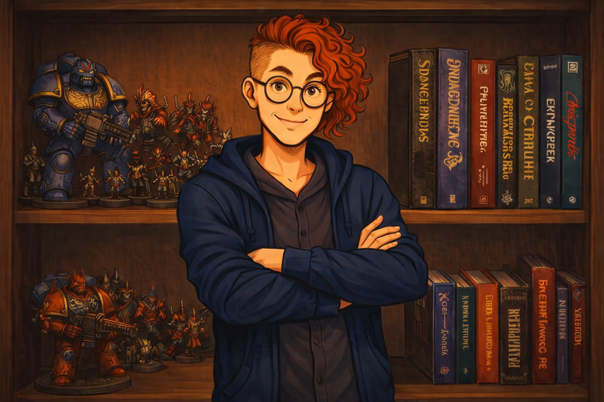
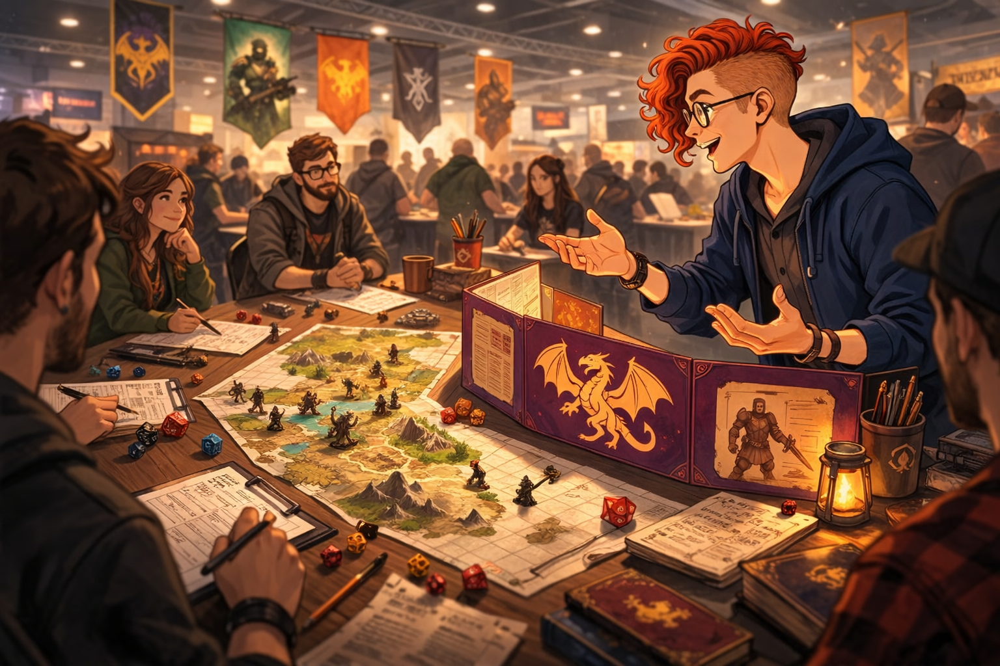
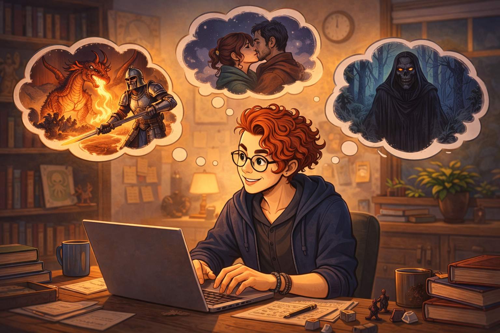

Jakub Kamiński – Sesje RPG
Zanim wyruszysz w drogę
Zanim wyruszysz w drogę

Nazywam się Jakub Kamiński i od lat prowadzę sesje RPG dla młodzieży i dorosłych — zarówno kameralne kampanie, jak i wydarzenia konwentowe.
RPG to dla mnie medium opowieści — przestrzeń, w której świat reaguje na decyzje graczy, a historia powstaje między ludźmi przy stole.
Ukończyłem studia z zakresu Projektowania Gier. Specjalizuję się w narracji interaktywnej i konstrukcji scenariuszy.
Łączę praktykę z teorią — świadomie budując napięcie, rytm historii i doświadczenie gracza jako uczestnika opowieści.

Nie jestem po to, by być wrogiem graczy. Świat bywa brutalny — ale trudności istnieją po to, by zwycięstwa miały znaczenie.
Scenariusz jest elastyczny — historia skręca razem z drużyną. Ważne są nie tylko historie które ja chce opowiedzieć ale również historie które gracze chcą przeżyć. Przez co często kanon w którym prowadzę, traktuję jak plastelinę.
Uwielbiam wszelką improwiację do której zmuszają mnie decyzje graczy. Przez wszystkie sesje które zagrałem i poprowadziłem, najbardziej siedzą mi w pamięci momenty które wyszły całkowicie z przypadku, z jednej decyzji, czy losowego rzutu kostką.

Inspiruję się muzyką, literaturą fantasy, animacjami oraz rozbudowanymi uniwersami.
Często sięgam po swoje ulubione twory, chociażby takich autorów jak Dmitrij Głuchowski, Dan Abnett, Christie Golden, Rick Riordan czy Oliwer Bowden. Ale również mangaków jak Hirohiko Araki, tatsuki Fujimoto czy Gege Akutami. Bardzo dużo znajdzie się u mnie odniesień do ich twórczości i rozpoznawalnych wątków.
Ogromne Uniwersa jak Warhammer 40k czy League of Legends są dla mnie dużą inspiracją do tworzonych światów. Każde z nich ma swoje niuanse w których można poprowadzić cudowną historię, jednocześnie dając narzędzia do kreacji "swojego" kanonu. Wiele elementów łączy się ze sobą w niesamowity sposób, wątki przeplatają się z innymi, postaci potrafią mieć (w większości) jakiś wpływ na ten świat.